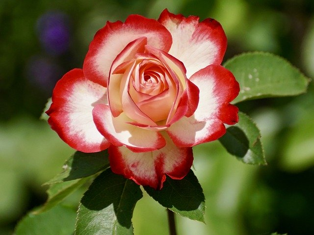

The Galley
Images of Roses
San Francisco Botanical Garden
Shades range from softest blush pink to red.
Roses are beautiful. Three roses in light pink, red, and light pink and fuchsia.
Pink Rose
Back to the top
Red Rose

Back to the top
Blush Pink and Fuchsia Rose

Image by Susanne Jutzeler, suju-foto from Pixabay
Back to the top